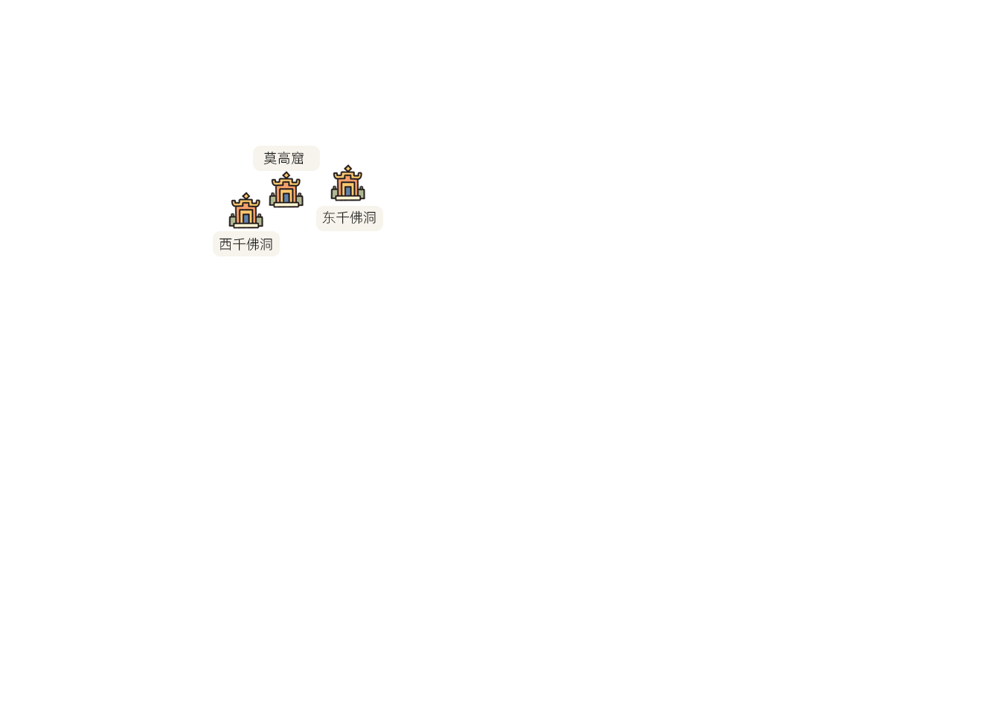
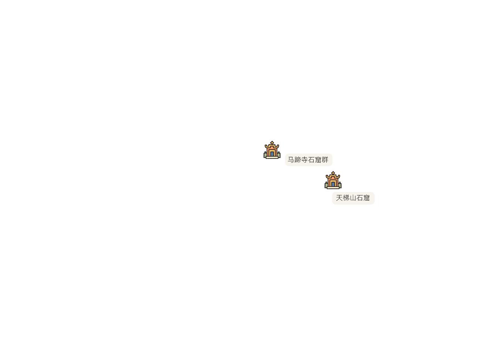

被誉为中国的“石窟之乡” 的甘肃，生动形象地再现了中国佛教的发展历史，也全面、完整地表现了中国佛教艺术的发展演变过程。
被誉为中国的“石窟之乡” 的甘肃，生动形象地再现了中国佛教的发展历史，也全面、完整地表现了中国佛教艺术的发展演变过程。






当全球变暖的速度比至少两千年以来的任何时候更快，这样长期的气候变化对文物遗迹的保存造成额外的潜在威胁，加剧了文物遗迹损坏速度、导致新的损坏类型出现。
被誉为中国的“石窟之乡” 的甘肃，生动形象地再现了中国佛教的发展历史，也全面、完整地表现了中国佛教艺术的发展演变过程。

当全球变暖的速度比至少两千年以来的任何时候更快，这样长期的气候变化对文物遗迹的保存造成额外的潜在威胁，加剧了文物遗迹损坏速度、导致新的损坏类型出现。

甘肃的石窟寺沿河西走廊和陇东一线分布，是中国石窟分布最集中的地区。根据甘肃省石窟寺专项调查报告2021年的统计，全省现有文物点236个，包括229座石窟寺，7座摩崖造像。
甘肃省全境14个市州，除甘南藏族自治州外兰州、白银、嘉峪关、酒泉、定西、临夏、陇南、平凉、庆阳、天水、武威、张掖、金昌等13 个市州，53
个县区均分布有石窟寺。
如开篇所说，气候的长期缓慢变化，给甘肃地区的文物带来风化剥蚀、沉积掩埋、冻融撑裂、地下水侵蚀，以及盐碱起甲等挑战。同时，气候的急剧变化，主要为极端天气引起的气象灾害（如洪水、风暴、火灾等），则会导致窟内渗水、壁画脱落，甚至崖壁上部和中部洞窟还有坍塌的风险，因而对石窟文物造成毁灭性的破坏。

酥碱和起甲
壁画地仗中含有大量可溶盐。盐分会随着环境湿度的高低而反复溶解膨胀或结晶收缩。这种变化作用于地仗层，破坏地仗层结构至酥松粉化（酥碱）。同时，壁画粉层（或颜料层）也会因与地仗层失去粘连作用而剥离（起甲）。因此，酥碱和起甲一般同时发生，是最严重、危害最大，且最难治理的石窟壁画病害之一。
开裂和空鼓
石窟壁画常以山体为底。支撑山体出现裂隙或产生下沉时，不仅会导致壁画表面发生开裂，还会使壁画地仗层整体离开支撑层，从而出现空鼓。
位于中国西北地区的甘肃省，是“两屏三带”中国生态安全战略格局中的重要组成部分，其生态质量决定着西北地区和青藏高原地区的生态安全。

甘肃省大部分地区气候干燥，降水量少，水资源匮乏，是典型的气候变化敏感区和生态环境脆弱区。由于地域狭长，地质地貌、气候类型不一。
莫高窟、东千佛洞和西千佛洞属河西西部暖温带干旱区，具有干旱（年降水量30-50mm）、降雨量少、蒸发量大、日照长、温差大、风沙活动频繁、风蚀作用强烈的典型沙漠气候特征。
文殊山石窟属河西冷温带干旱区，该区域内降水量小，植被稀疏，是典型的干旱型生态脆弱区。
天梯山石窟和马蹄寺石窟群所处地属祁连山高寒半干旱区，气候寒冷，暴雨雪频繁，阴湿天气多。
炳灵寺石窟,陇中北部冷温带半干旱区，所处地区降水相对较多（年降水量350mm），蒸发量大，温差较大。
麦积山石窟、榆林窟、水帘洞、南石窟寺和北石窟寺属陇中南部温带半湿润区。气候冷凉，降水相对较多（年降水800mm）。
自然因素影响大、干旱范围广、水土资源不匹配、植被少而不均、承载力低、修复能力弱是甘肃生态的基本特征。
从温度来看，甘肃省气候变暖特征明显，年平均气温、平均最高及最低气温均呈明显增加趋势，并在21世纪初发生了由低到高的年代际转变。

21世纪初以来，甘肃省平均最高气温及平均最低气温均表现出了明显的年代际增加。在甘肃省气候变暖下，极端高温日数也呈显著增加趋势尤其是2000年以来，极端高温日数较2000年以前增加了约5.5天。
1961-2021 年，甘肃年累计降水量为414.5mm，2000 年前年降水量呈减少趋势，2000
年后呈增加趋势。然而，近60 年降水日数则呈现明显的减少趋势，减少速率为7.4 天/10 年，这表明极端降水可能增加了。

壁画保存的高风险湿度区间是60%~65%，在一定温度范围内，洞窟空气湿度的波动能够驱动岩体盐分向壁画地仗层迁移，不断地溶解，结晶，进行恶性循环，从而产生了严重的返碱、酥碱病害。
壁画颜料层、底色层或地仗表面泥层所含胶质材料过多，是壁画产生起甲病害的根本原因，温湿度变化是导致病害发生的必要条件。在相对湿度较高的环境中，砂砾岩易风化，泥质胶结物中的黏土矿物反复吸水膨胀，也会导致沙砾的胶结结构破坏，导致洞窟壁画的空鼓病害。
洪水泥石流——漫过窟前的防洪堤坝和跨河桥面，造成部分底层洞窟进水，并在窟前淤积了大量泥沙，引起洞窟潮湿、壁画霉变、酥碱等病害
甘肃是中国西北生态系统的代表，作为深居欧亚大陆腹地、对全球气候变化最为敏感的区域之一，西北地区丰富而脆弱的生态系统、文化遗产及社会经济正承受着全球气候变化带来的新挑战。
环境气象监测工作是分析文物病害机制、科学展开文物保护和修复的第一步，是遗产地科学管理和保护决策的依据，已成为遗产保护最基本、最重要的工作之一。自1987
年莫高窟被列入世界文化遗产以来，敦煌研究院将国内外先进的科学监测和分析手段引入莫高窟的保护工作中，其监测体系经历了从无到有、从简单到复杂、从直觉判断到系统化现代化、从被动到主动的过程。
近年来，众多应对气候变化与灾害监测预警与防范的专项研究也为中国大量隶属不同地理和气候分区、材料和结构各异的不可移动物质文化遗产保护应对气候变化风险提供了科学保障。
在2011年底完成的第三次全国文物普查发现： 不可移动文物的保护状况不容乐观。 现存的近77 万处不可移动文物， 保存状况令人堪忧的占到了多数， 其中保存状况较差的占17.77%；
保存状况差的占8.43%。
虽然当前文保部门、基金会和研究机构已投入大量的科研力量和经费用于重点文物的环境监测、修复和修缮，获得的理论和实践经验将有助于气候风险的应对。然而大量保护等级较低的文物，由于资金和人力的不足，尚未得到恰当的保护和修缮。

面对因人类活动而加剧的西北地区文物病害进程以及结构性损毁风险，国际环保机构绿色和平于2023年8月4日，与华风气象传媒集团联合发布《文明的温度：气候变化对中国西北地区生态、产业及文化遗产系统性影响评估——以甘肃为例》报告，依托系统性考察评估，指出高度依赖气候条件和水资源的西北地区在物质文化遗产的存续等方面的更严峻处境，呼吁公众关注气候风险对文物的影响的同时，探索有效的解决之法。